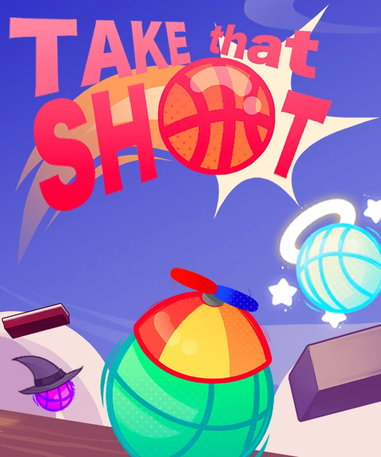

Press Kit · Free demo out now
Take That Shot
You're a basketball. Roll, charge-jump and dash up a tower of floating junk, squash your friends on the way, and try to sink a shot at the top. Solo or with up to 8 players.

Factsheet
- Developer
- Triarch Interactive
- Publisher
- Triarch Interactive (self-published)
- Release
- Q1 2027 · demo out 2 November 2026
- Platform
- Windows PC · Steam
- Players
- 1–8 · online co-op with voice & text chat
- Genre
- Physics platformer
- Controls
- Keyboard & mouse · full controller support
- Languages
- English
- Press contact
- business@triarchinteractive.com
Description
Above you is a tower made of floating junk — crates, boats, ice and shop tables, hanging in the sky over a small island with a basketball court on it. The only way to finish is up. Fall off and you go back down. Fast.
Movement is the whole game. Tap jump for a hop, hold it to charge a huge one. Two recharging dashes save a bad jump — or ruin a friend's good one. Ground-slam from the air and anyone underneath gets squashed.
The tower is split into themed stages — a harbour, a goblin camp, a glacier, a city and more — each with a long easy route, a short hard one and one packed with obstacles. Every stage ends on a checkpoint plaza. And yes, there are hoops: sink one and the whole lobby gets fireworks.
Features
- Roll, charge-jump, dash, slam — a small moveset with a lot of skill in it.
- Up to 8 players — online with built-in voice and text chat; climb together or knock each other off.
- Ten themed stages — springs, air streams, bumpers, elevators, seesaws and spinning arms.
- Live height meter — every player in their own ball colour, so you always know who just fell.
- Make your ball yours — paint it, pick from 13 hats and add a trail.
- Free demo — the first three stages, out now on Steam.
Screenshots 1920×1080 · click for full size


Key art & logos


The game logo, wide banners and the full art set are in the press kit .zip.
Trailer
Demo Trailer — watch it on the Steam page ↗. Need the source file for your video? Email us and we'll send a download link.
Press contact
Review keys, preview builds, interviews, extra footage — ask and we'll get back to you.